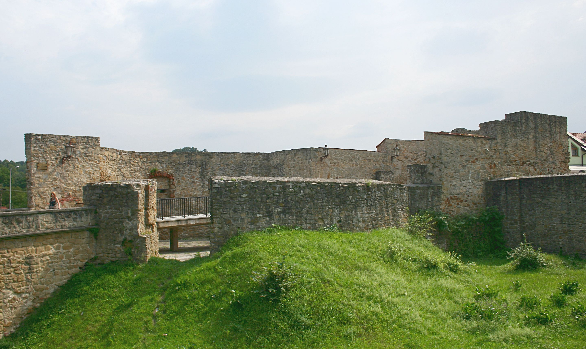

Ročníkový projekt WebTech
Zisti viac
1400
1420
1420
1654
1882
1889
1889
1906
1941
1982
1400
Názov
Dedičná Bieber štôlňa
Miesto
Štiavnické Bane, Urbánka F. ul.
Súradnice
lat: 48.441260
lon 18.902253

1420
Názov
Dolná brána s mostom, Bardejov
Miesto
Prešovský kraj, okres Bardejov, Bardejo
Súradnice
lat: 49.294332
lon: 21.278297
1420
Názov
Bývalá mestská brána s mostom, Bardejov
Miesto
Prešovský kraj, okres Bardejov, Bardejov
Súradnice
lat: 49.294332
lon: 21.278297
1654
Názov
Rožňavská mestská veža
Miesto
Rožňava, Baníkov nám.
Súradnice
lat: 48.662135
lon: 20.533023
1882
Názov
Schoellerov mlyn
Miesto
Levice, Mlynská ulica
Súradnice
lat: 48.217658
lon: 18.603478
1889
Názov
Vodný mlyn Dunajský Klátov
Miesto
Trnavský kraj, okres Dunajská Streda, Dunajský Klátov
Súradnice
lat: 48.028519
lon: 17.7029306
1889
Názov
Starý most Františka Jozefa I.
Miesto
Bratislava, Staré mesto
Súradnice
lat: 48.143824
lon: 17.125515
1906
Názov
Gymnázium P.J.Šafárika
Miesto
Rožňava, Hronca akademika ul.
Súradnice
lat: 48.663770
lon: 20.530919
1941
Názov
Bratislavská tepláreň
Miesto
Bratislava, Čulenova ulica
Súradnice
lat: 48.138368
lon: 17.117270
1982
Názov
Lodný mlyn Kolárov
Miesto
Nitriansky kraj, okres Komárno, Kolárov
Súradnice
lat: 47.9205454
lon: 18.0016874
+
-